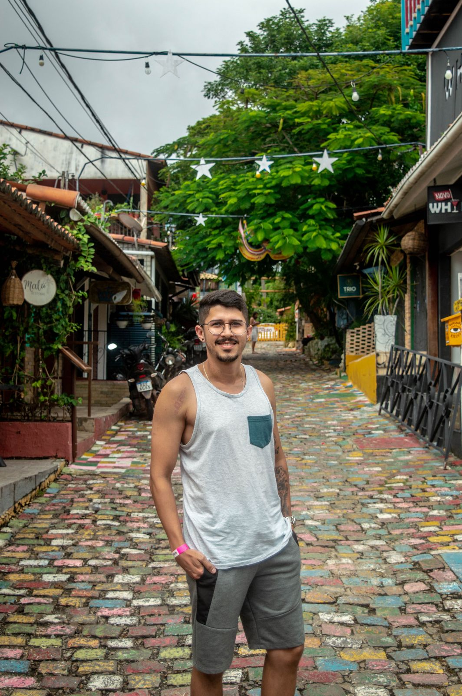

Anderson Melo
Um entusiasta de tecnologia de 29 anos, casado e com formação técnica em Eletroeletrônica. Minha paixão por hardware de computador se une ao crescente interesse por desenvolvimento web, atualmente cursando Sistemas para Internet (P1) na UNIESP. A fé cristã guia meus valores e a programação alimenta minha curiosidade e desejo de criar soluções inovadoras.
 GitHub
GitHub

Joalis Batista
28 anos, Amante da Tecnologia da Informação com forte interesse em hardware e software. Atualmente, Cursando Sistemas para Internet na UNIESP, onde aprofunda seus conhecimentos e habilidades técnicas. Comprometido com o aprendizado contínuo e o desenvolvimento profissional, busca constantemente oportunidades para atuar e evoluir na área de TI.
Pedro Henrique
24 anos, curioso e dedicado à Tecnologia da Informação, com interesse em soluções de software e sistemas. Atualmente, estudante de Sistemas para Internet na UNIESP, onde se empenha em expandir seus conhecimentos técnicos. Está sempre em busca de novas experiências que o ajudem a evoluir na carreira de TI.